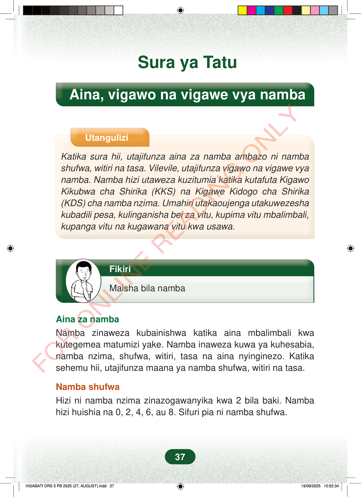

Sura ya TatuAina, vigawo na vigawe vya nambaUtanguliziKatika sura hii, utajifunza aina za namba ambazo ni nambashufwa, witiri na tasa. Vilevile, utajifunza vigawo na vigawe vyanamba. Namba hizi utaweza kuzitumia katika kutafuta KigawoKikubwa cha Shirika (KKS) na Kigawe Kidogo cha Shirika(KDS) cha namba nzima. Umahiri utakaoujenga utakuwezeshakubadili pesa, kulinganisha bei za vitu, kupima vitu mbalimbali,kupanga vitu na kugawana vitu kwa usawa.FikiriMaisha bila nambaAina za nambaNamba zinaweza kubainishwa katika aina mbalimbali kwakutegemea matumizi yake. Namba inaweza kuwa ya kuhesabia,namba nzima, shufwa, witiri, tasa na aina nyinginezo. Katikasehemu hii, utajifunza maana ya namba shufwa, witiri na tasa.Namba shufwaHizi ni namba nzima zinazogawanyika kwa 2 bila baki. Nambahizi huishia na 0, 2, 4, 6, au 8. Sifuri pia ni namba shufwa.37
Sura ya Tatu
Aina, vigawo na vigawe vya namba
Utangulizi
Katika sura hii, utajifunza aina za namba ambazo ni namba shufwa, witiri na tasa. Vilevile, utajifunza vigawo na vigawe vya namba. Namba hizi utaweza kuzitumia katika kutafuta Kigawo Kikubwa cha Shirika (KKS) na Kigawe Kidogo cha Shirika (KDS) cha namba nzima. Umahiri utakaoujenga utakuwezesha kubadili pesa, kulinganisha bei za vitu, kupima vitu mbalimbali, kupanga vitu na kugawana vitu kwa usawa.
Fikiri
Maisha bila namba
Aina za namba Namba zinaweza kubainishwa katika aina mbalimbali kwa kutegemea matumizi yake. Namba inaweza kuwa ya kuhesabia, namba nzima, shufwa, witiri, tasa na aina nyinginezo. Katika sehemu hii, utajifunza maana ya namba shufwa, witiri na tasa.
Namba shufwa Hizi ni namba nzima zinazogawanyika kwa 2 bila baki. Namba hizi huishia na 0, 2, 4, 6, au 8. Sifuri pia ni namba shufwa.
37
Sura ya TatuAina, vigawo na vigawe vya nambaUtangulizi wa sura unaeleza kujifunza namba shufwa, witiri na tasa, pamoja na vigawo na vigawe vya namba. Pia unaonyesha matumizi yake kama kubadili pesa, kulinganisha bei, kupima vitu na kugawana kwa usawa.UtanguliziKatika sura hii, utajifunza aina za namba ambazo ni namba shufwa, witiri na tasa.Vilevile, utajifunza vigawo na vigawe vya namba.Namba hizi utaweza kuzitumia katika kutafuta Kigawo Kikubwa cha Shirika (KKS) na Kigawe Kidogo cha Shirika (KDS) cha namba nzima.Umahiri utakaoujenga utakuwezesha kubadili pesa, kulinganisha bei za vitu, kupima vitu mbalimbali, kupanga vitu na kugawana vitu kwa usawa.Kisanduku cha Fikiri chenye mada: Maisha bila namba.Mtoto ameshika kidevu na anafikiri.FikiriMaisha bila nambaAina za nambaNamba zinaweza kubainishwa katika aina mbalimbali kwa kutegemea matumizi yake.Namba inaweza kuwa ya kuhesabia, namba nzima, shufwa, witiri, tasa na aina nyinginezo.Katika sehemu hii, utajifunza maana ya namba shufwa, witiri na tasa.Namba shufwaHizi ni namba nzima zinazogawanyika kwa 2 bila baki.Namba hizi huishia na 0, 2, 4, 6, au 8.Sifuri pia ni namba shufwa.